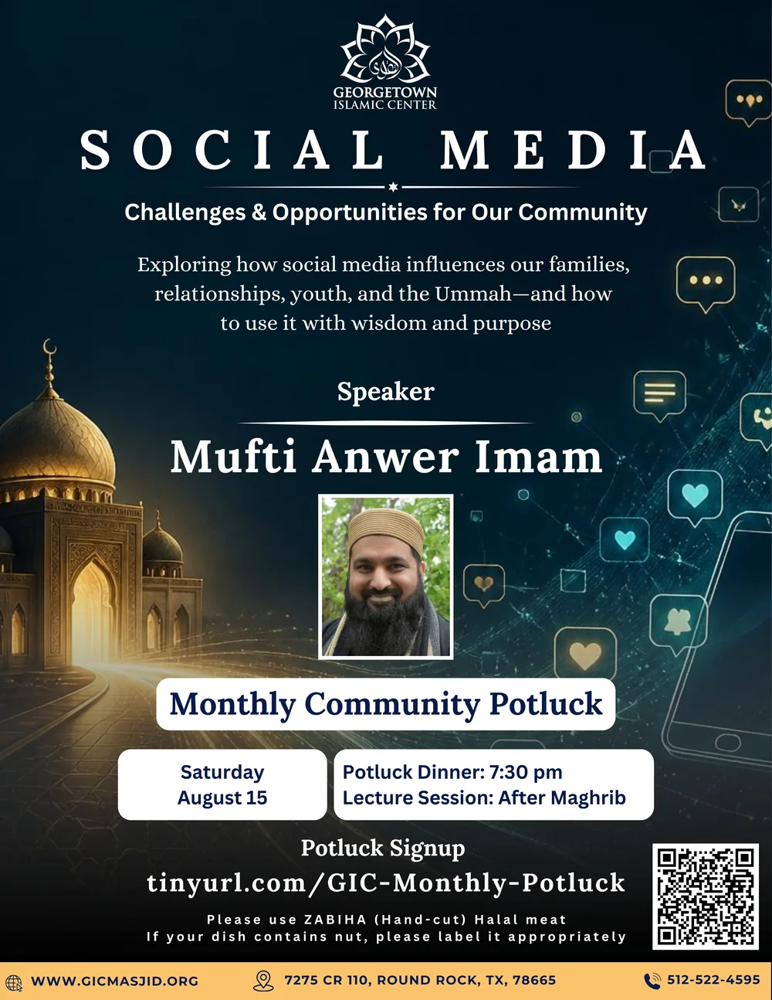
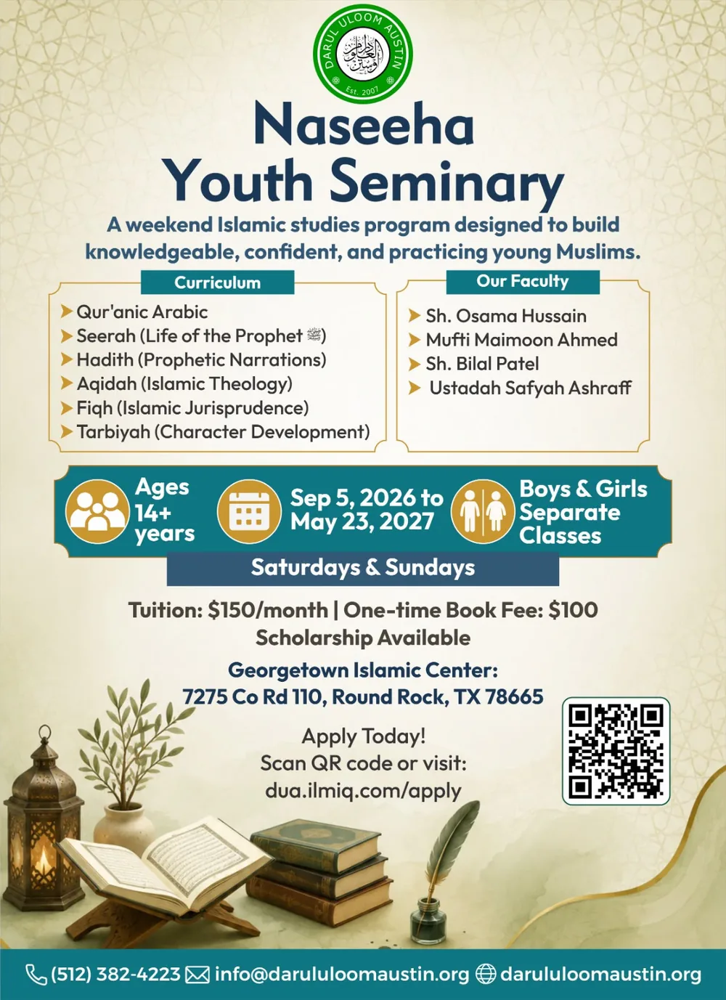
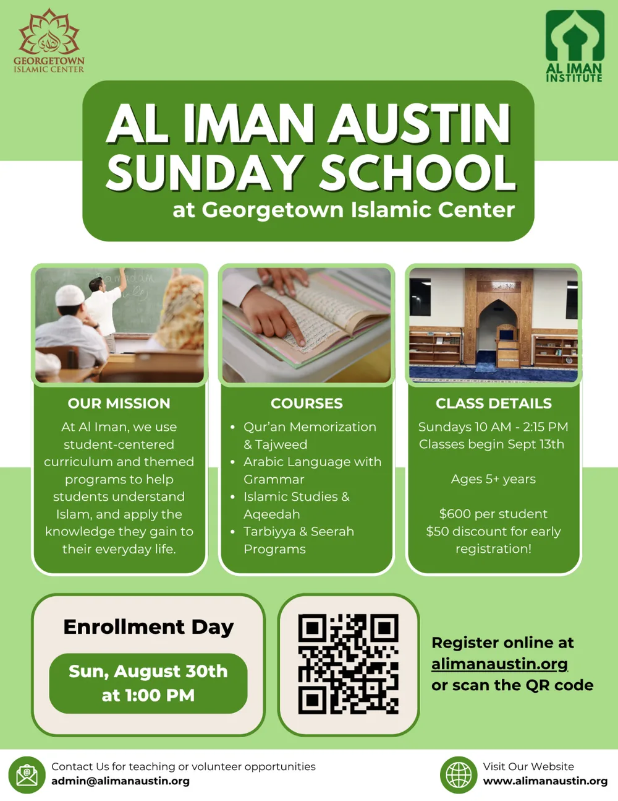
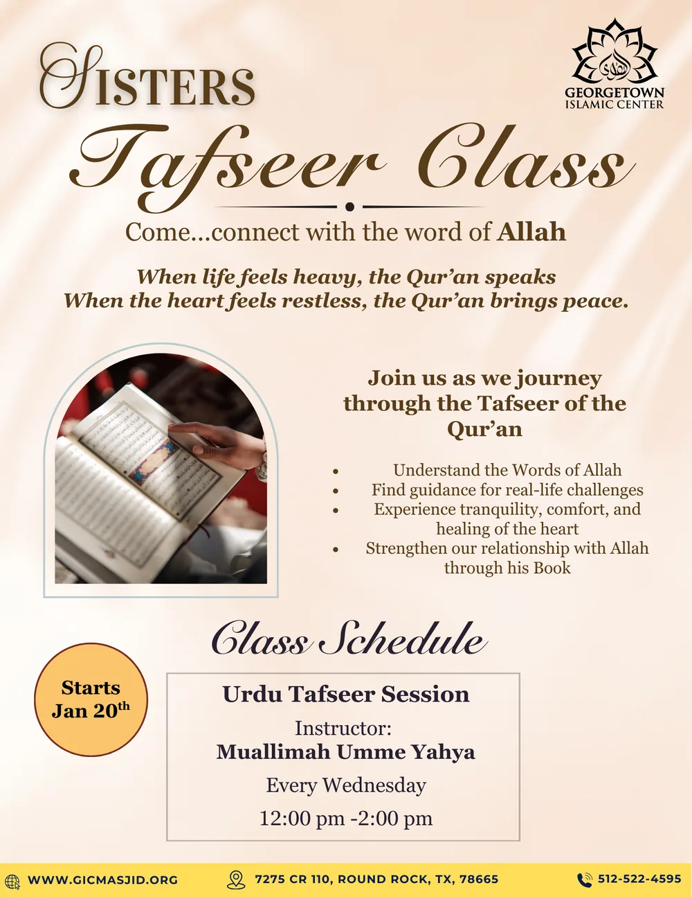
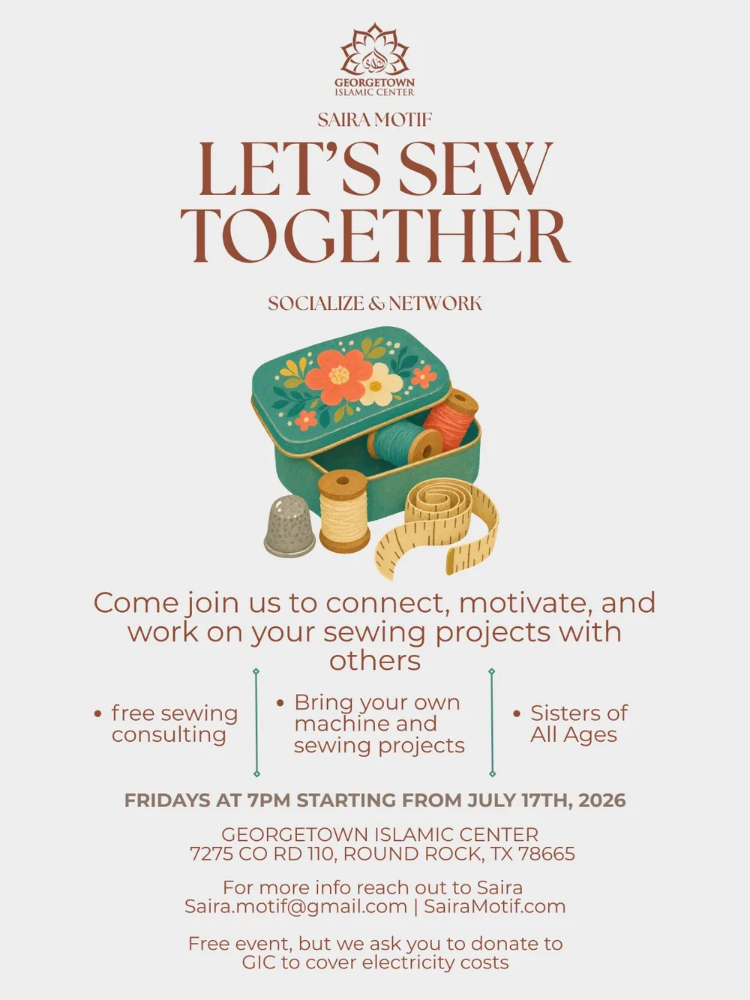

{kind=link}
{kind=link}
Darul Uloom Austin
After School Program
Building a strong foundation in Qur’an, Islamic knowledge, and character — Qur’an with Tajweed, Aqidah, Hadith, Islamic manners, Fiqh, Seerah, and Islamic history.
Home / Events
Community calendar
Stay connected through educational programs, community gatherings, and special events for all ages.
Featured

“Social Media — Challenges & Opportunities for Our Community”: exploring how social media influences our families, relationships, youth, and the Ummah — and how to use it with wisdom and purpose.
Please use Zabiha (hand-cut) halal meat. If your dish contains nuts, label it appropriately.
Programs & classes
Weekly and weekend programs running at the masjid this year. Tap any flyer to read it full size.
Building a strong foundation in Qur’an, Islamic knowledge, and character — Qur’an with Tajweed, Aqidah, Hadith, Islamic manners, Fiqh, Seerah, and Islamic history.

A weekend Islamic studies program designed to build knowledgeable, confident, and practicing young Muslims — Qur’anic Arabic, Seerah, Hadith, Aqidah, Fiqh, and Tarbiyah.
Faculty: Sh. Osama Hussain, Mufti Maimoon Ahmed, Sh. Bilal Patel, Ustadha Safyah Ashraff.

Student-centered curriculum and themed programs covering Qur’an memorization & Tajweed, Arabic language with grammar, Islamic studies & Aqeedah, and Tarbiyya & Seerah.

A journey through the Tafseer of the Qur’an — understanding the words of Allah, finding guidance for real-life challenges, and strengthening our relationship with His Book.

Connect, motivate, and work on your sewing projects alongside others — with free sewing consulting. Bring your own machine and projects. Hosted by Saira Motif.
Dates and sign-up links are announced first on our social channels, and the office is always happy to confirm a time by phone or email.
Every week & every season
Two khutbahs every Friday — 2:00 PM and 3:00 PM.
Guest speakers and study circles for the whole community.
Eid salah, Taraweeh, and seasonal community programs.
Looking at Qur’an and seminary tracks in more depth? They are laid out on the Education page.
{kind=link}
{kind=link}
{kind=link}
{kind=link}